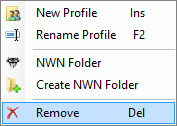
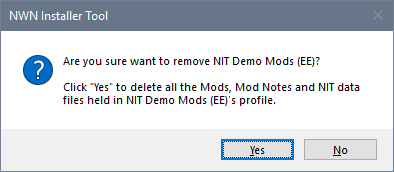

When you delete a Profile, the Installer Tool deletes the Profile's directory in the NIT Store's Profiles and Data folders. The deleted folders are moved to the Recycle Bin, unless you have changed the default option on the Preferences page in Advanced Settings.
Use the Profiles page in Advanced Settings to remove a Profile.

 Edit Icon and click Remove.
Edit Icon and click Remove.

Create a Neverwinter Nights folder
Specify a Neverwinter Nights folder
Remove a Profile